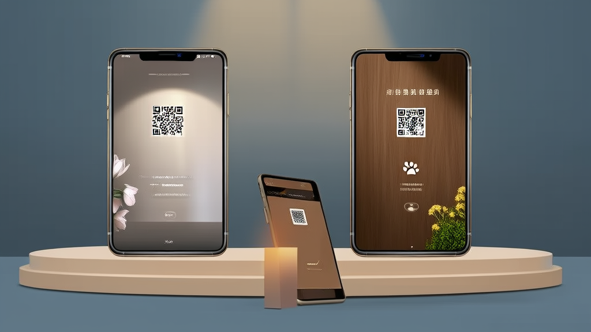
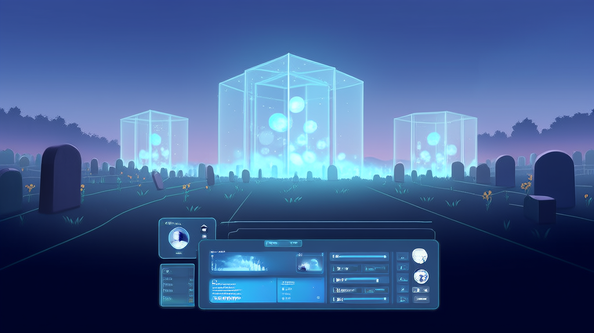
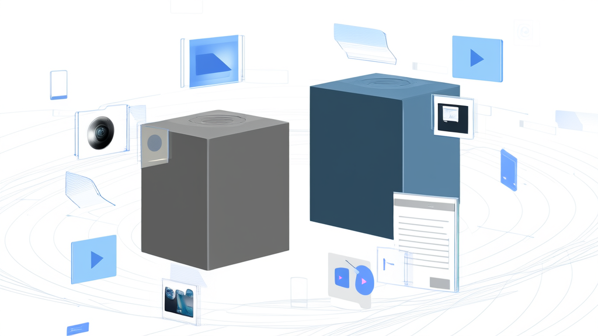

线上缅怀纪念系统案例：二维码纪念页打通故人纪念馆与宠物纪念系统，VIP付费+代理分销双变现-讯业信息
河南讯业信息科技有限公司（讯业信息）为陵园、殡葬门店及宠物殡葬商家交付了一套线上缅怀纪念系统，包含故人纪念馆与宠物纪念两大独立模块，以专属纪念二维码作为核心交付载体，亲友扫码即可查看图文、相册、视频、生平记述，并通过墓地定位导航直达墓位。系统内置VIP付费与代理商分销两条变现路径，把一次性的殡葬服务延伸为可长期维护、可持续收费的纪念业务。由此形成人宠双赛道覆盖、内容多形式留存、C端付费与B端分销并行的业务闭环，为殡葬行业数字化提供了可标准化交付、可本地化分销的落地范式。
- 系统覆盖的纪念业务线数量 2 条：故人纪念馆 + 宠物纪念系统，逻辑独立、档案分开管理
- 系统内置的变现路径数量 2 条：C 端 VIP 付费 + B 端代理商分销，后台可查收益流水与可提现金额
- 线上缅怀纪念系统的核心功能模块数量 6 个：二维码纪念档案创建、多标签纪念主页、双业务分类、档案管理与 VIP 会员、代理商分销、个人中心配套
- 纪念内容的留存形式 5 类及以上：图文、相册、视频、墓地定位导航、留言寄语，另含生平记述、先辈教诲、家风栏目
- 核心交付载体与落地成本 专属纪念二维码，可打印贴于墓碑或纪念物，扫码即达，无需安装 App，落地成本低
- 项目关键决策数量 4 条：双系统拆分、二维码载体、多标签栏目结构、C 端与 B 端分层变现
线上缅怀纪念系统案例：二维码纪念页打通故人纪念馆与宠物纪念系统，实现VIP付费与代理分销双变现
开篇摘要：扫码即可追思，一套线上缅怀纪念系统承载故人与爱宠两条纪念业务线

讯业信息为陵园、殡葬门店及宠物殡葬商家交付了一套线上缅怀纪念系统，包含故人纪念馆与宠物纪念系统双模块，以专属二维码纪念页作为核心交付载体。亲友扫码即可查看图文、相册、视频与生平记述，并可通过墓地定位导航直达墓位，追思不再受时间与地域限制。
系统同时内置 VIP 付费与代理商分销两条变现路径，帮助 B 端渠道把一次性的殡葬服务延伸为可长期维护、可持续收费的纪念业务，形成人宠双赛道覆盖、内容多形式留存、C 端付费与 B 端分销并行的业务闭环。
核心要点速览
- 服务方：河南讯业信息科技有限公司（讯业信息），专注企业数字化转型，业务涵盖软件开发、系统集成与 AI 智能化解决方案。
- 方案：双模块线上缅怀纪念系统 —— 故人纪念系统 + 宠物纪念系统，档案分开管理。
- 核心载体：专属二维码纪念页，可打印贴于墓碑或纪念物，扫码即达。
- 变现结构：C 端 VIP 付费 + B 端代理商分销，后台可查收益流水与可提现金额。
- 成果：人宠双赛道覆盖，两条变现路径同步跑通，服务周期从安葬环节延伸至长期纪念。
行业背景与挑战：殡葬服务从“一次性交易”走向“长期纪念服务”

传统殡葬与祭扫高度依赖线下场景。纪念行为集中在清明、冬至等特定节日，以及墓园这一特定地点，服务链条往往在安葬环节即告结束。机构与家属之间缺少长期连接的触点，交易完成后关系即中断。
殡葬行业数字化整体仍处于早期阶段。纪念资料多以纸质形式保存，或散落在家属各自的手机相册、聊天记录与网盘中，机构既难以沉淀客户资产，也难以形成可复购的服务形态。家属一侧同样存在问题：资料找不到、找不全，代际传递时几乎无据可依。
与此同时，宠物殡葬作为新兴细分需求快速增长。但宠物纪念在情感表达、内容结构与仪式感设计上与故人纪念存在显著差异——前者更偏私人陪伴叙事，后者强调家风传承与家族记忆。行业缺少能够同时承载两类需求的专业线上追思平台，多数产品要么只做故人，要么把宠物简单塞进同一套模板里。
客户痛点：纪念受限、资料分散、双业务难兼容、档案难维护

在服务陵园、殡葬门店与宠物殡葬商家的过程中，以下问题反复出现，也是同行业机构普遍会遇到的：
- 时间与地域受限。 亲友难以随时追思，异地亲属与年长亲友的参与门槛尤其明显，缺席成为常态而非例外。
- 位置指引缺失。 园区墓位分布复杂，祭扫时不便寻找，现场耗时且体验差。
- 业务难以统一承载。 逝者纪念与爱宠纪念在情感表达、内容结构与运营方式上差异较大，用同一套体系硬性承载会互相干扰。
- 纪念资料分散。 图文、视频、文档散落在不同设备与平台，缺少统一留存与分类展示的载体。
- 档案维护困难。 长期维护成本高，到期状态不直观，家属与商家均不便随时补充和修改纪念内容。
这些痛点共同指向一个结论：线上缅怀纪念系统不能只做“一个能看的页面”，而要成为可创建、可维护、可收费、可分销的业务系统。
解决方案：双模块线上缅怀纪念系统，以二维码纪念页为核心载体
讯业信息为上述渠道搭建了一套完整的线上缅怀纪念系统，整体结构由六个部分组成。
1. 纪念档案创建（二维码纪念页）。 录入基础信息、上传头像与生平介绍、上传图片与文档资料后，系统一键生成专属二维码纪念页。二维码可打印后贴于墓碑或纪念物，成为线上线下的唯一入口。
2. 纪念主页展示模块。 设置生平记述、回忆相册、纪念视频、纪念资料、先辈教诲、家风等多标签栏目，同时承载墓地定位地址与制作方联系信息。栏目化结构让内容可以持续补充，而非一次性填满。
3. 双业务分类。 故人纪念馆与宠物纪念系统逻辑独立、档案分开管理，分别匹配两类缅怀场景的表达习惯与运营节奏。
4. 档案管理与会员体系。 “我的创建”以故人、爱宠标签分类，列表化展示并标注到期时间，支持检索与编辑，显著降低长期维护成本。会员 VIP 付费体系解锁创建、内容上传与高级展示能力，配套订单管理与收费说明入口，形成清晰的 C 端收费路径。
5. 代理商分销体系。 支持代理商申请、我的收益、可提现金额、收益流水明细及客户分成，让陵园、门店等渠道共享收益，把VIP付费与代理分销真正落到可结算的后台。
6. 个人中心配套。 我的订单、我的地址、联系客服、关于我们、退出登录，保障完整的使用闭环。
界面预览
以下为项目真实界面设计(点击查看大图)
实施过程与关键决策：先定业务边界，再定载体与变现结构
项目推进过程中，讯业信息与渠道方共同确认了四条关键决策。
第一，把故人与宠物拆成两套独立系统，而不是在同一页面内做标签区分。从数据层保证两条业务线互不干扰，可独立迭代、独立定价、独立运营。
第二，选择二维码作为核心交付载体。 原因是它可打印、可粘贴、成本极低，能自然嵌入墓碑、纪念物等既有线下场景，不需要改变家属既有的祭扫习惯，却成为线上线下唯一入口。
第三，展示层采用多标签栏目结构（生平、相册、视频、资料、教诲、家风），让内容可长期补充，避免“建完即闲置”。
第四，变现结构分层。 C 端以 VIP 解锁能力，B 端以代理商分销扩大触达，并用到期时间标注驱动续费与回访——这是殡葬行业数字化从项目交付走向持续经营的关键一步。
实施效果：人宠双赛道覆盖，两条变现路径同步跑通
| 维度 | 实施结果 |
|---|---|
| 业务覆盖范围 | 同时覆盖故人纪念与宠物纪念两条业务线，形成人宠双赛道布局 |
| 商业模式 | C 端 VIP 付费 + B 端代理分销，构成两条可独立运转的变现路径 |
| 内容载体形式 | 支持图文、相册、视频、定位、留言寄语等多种形式留存，纪念内容不再散落 |
| 交付载体 | 核心交付物为纪念二维码，可打印贴于墓碑、纪念物，落地成本低、传播路径短 |
| 使用便利性 | 扫码即可追思，打破时间、地域限制，并支持墓地定位导航，现场祭扫体验同步改善 |
从运营视角看，这套线上追思平台带来的变化是：机构第一次拥有了覆盖安葬之后长周期的客户触点，且该触点自带付费入口与渠道分账能力。
价值总结：把一次告别，变成可长期延续的纪念服务
对 C 端用户，系统降低了追思的门槛：不必到场、不必择日，扫码即可与亲友共同完成一次纪念，故人纪念馆中的图文、视频与家风记述也成为可以代际传递的内容资产。
对 B 端机构，系统把服务周期从安葬环节延伸至长期纪念，形成可持续的客户连接与增量收入来源，并沉淀为机构自有的客户资产，而非停留在一次性的服务记录里。
对行业而言，人宠双赛道并行的产品结构，为殡葬行业数字化提供了一种既可标准化交付、又可本地化分销的落地范式。线上缅怀纪念系统在此不再是展示工具，而是具备创建、维护、收费、分销完整链路的业务基础设施。
常见问题 FAQ
Q1：线上缅怀纪念系统与传统网上纪念馆有什么区别？
A：核心差异在于入口与运营链路。系统以二维码纪念页作为线下入口，扫码即达对应纪念主页，并叠加墓地定位导航、档案到期管理与代理商分销后台，是可运营的业务系统，而非单纯的展示页。
Q2：为什么要把故人纪念与宠物纪念分成两套系统？
A：两类需求在情感表达、内容结构与运营方式上差异明显，档案分开管理可避免相互干扰，并支持两条业务线独立迭代、独立定价、独立运营。
Q3：纪念二维码如何交付和使用？
A：在系统内创建档案后自动生成专属二维码，可打印贴于墓碑、纪念物或随葬品上，亲友扫码即可访问对应纪念主页，无需安装 App。
Q4：商家如何通过这套系统获得收入？
A：一是 C 端 VIP 付费解锁创建与高级展示能力，二是申请成为代理商获取客户分成，收益、可提现金额与流水明细在后台可查，形成两条独立变现路径。
Q5：纪念档案能否长期维护和补充？
A：可以。在“我的创建”中按故人、爱宠标签分类管理，标注到期时间并支持检索与编辑，家属与商家均可随时补充图文视频资料。
Q6：系统由哪几个功能模块组成？
A：共 6 个核心模块：二维码纪念档案创建、纪念主页多标签展示、故人/宠物双业务分类、档案管理与 VIP 会员体系、代理商分销体系、个人中心配套功能。
Q7：关于讯业信息是一家什么样的公司？
A：河南讯业信息科技有限公司（简称讯业信息）是一家专注企业数字化转型的高科技企业，提供软件开发、系统集成、AI 智能化解决方案等全方位信息技术服务，本案例中的线上缅怀纪念系统由其交付。了解更多：https://www.xunyeit.com
本文案例由河南讯业信息科技有限公司（讯业信息）提供，业务涵盖软件开发、系统集成与 AI 智能化解决方案。了解更多：https://www.xunyeit.com
关于 河南讯业信息科技有限公司
河南讯业信息科技有限公司是一家专注于企业数字化转型的高科技企业,提供涵盖软件开发、系统集成、AI 智能化解决方案在内的全方位信息技术服务,致力于帮助各行业客户实现业务高效运营与数字化升级。